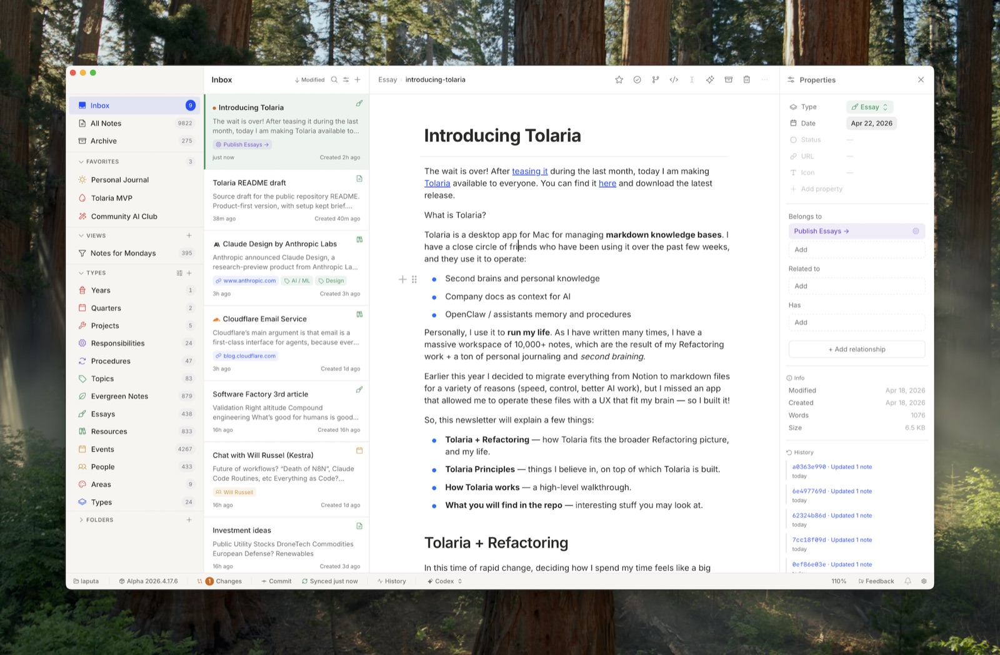

톨라리아와 옵시디언,
내 볼트엔 무엇이 맞나
두 앱의 공식 자료·깃허브 기록과 함께, 이 맥에 깔린 두 앱의 설정과 Rookie Work·Rookie Life 볼트 노트 1,440개 전부를 직접 세어서 비교했습니다.
먼저 결론
둘 다 같은 마크다운 파일을 여는 앱이라 하나만 골라야 하는 문제가 아닙니다. 본진은 톨라리아로 두고, 옵시디언은 필요할 때만 같은 폴더를 여는 보조 도구로 쓰는 게 맞습니다.
톨라리아가 지금 방식에 맞다
노트 1,440개 전부에 속성(frontmatter)이 있고, type으로 나눠 쓰고, 깃으로 두 맥을 맞추고, 에이전트가 볼트를 고칩니다. 톨라리아가 기본으로 하는 일이 정확히 이것입니다.
옵시디언은 같은 폴더를 여는 보조
옵시디언 전용 문법은 두 볼트 합쳐 4곳뿐이라 오가는 비용이 거의 없습니다. 연결 그래프, 플러그인 기능, 안정적인 모바일 앱이 필요할 때만 엽니다.
톨라리아 업데이트가 멈춰 있다
설치본은 2027.7.31, 실제 최신 정식판은 2026.10.13입니다. 개발자가 연도를 잘못 붙인 버전이라 새 버전을 더 낮은 번호로 볼 가능성이 큽니다. 직접 다시 설치해야 합니다.
1. 내 볼트는 어떤 모양인가
어느 앱이 맞는지는 볼트 모양이 정합니다. 두 볼트의 .md 파일을 하나씩 열어 셌습니다.
업무 볼트 type 값 상위 8개 (노트 수)
막대 위에 마우스를 올리면 자세한 값이 보입니다.
표로 보기
읽을 점
- 속성 100%: 톨라리아의 속성 패널과 type 사이드바가 손대지 않고 바로 먹힙니다. 옵시디언에서도 속성은 보이지만, type으로 묶어 보려면 Bases 같은 설정을 따로 해야 합니다.
- 위키링크 3,951개: [[ ]]는 두 앱 공통이라 어느 쪽에서 열어도 링크가 살아 있습니다.
- 옵시디언 전용 문법 4곳: Dataview 0곳, 콜아웃 2곳, ![[ ]] 임베드 2곳. 옵시디언에 묶인 볼트가 아닙니다.
- .obsidian 폴더 걱정 없음: 두 볼트 모두 .gitignore에 .obsidian/이 이미 들어 있어, 옵시디언으로 열어도 깃 기록에 섞이지 않습니다.
type이 흩어져 있다
- reference-note 193개와 reference 74개, Note 25개처럼 같은 뜻 다른 이름이 섞여 있습니다.
- 그래서 사이드바 type 칸이 업무 볼트 65개, 개인 볼트 104개가 됩니다.
- 톨라리아는 type을 "규칙이 아니라 찾는 렌즈"로 쓰라고 하니 틀린 건 아니지만, 이름을 합치면 톨라리아의 장점이 더 커집니다.
노트 첫 부분의 type: 줄을 그대로 센 값입니다. 업무·개인에 같은 이름이 있으면 각각 셌습니다.
2. 두 앱은 생각하는 방식이 다르다
파일 형식은 같고, 정리하는 방법과 기대는 곳이 다릅니다.
톨라리아: 노션처럼 정리, 깃처럼 저장
- 개발자 소개 그대로 "노션 같은데 오프라인이고 진짜 파일". 노트마다 type이 있고, 노트끼리 소속·관련·포함 관계를 칸으로 이어 붙입니다.
- 볼트 하나가 곧 깃 저장소. 자동 커밋·푸시(AutoGit)와 노트별 변경 기록이 앱 안에 있습니다.
- AI가 같이 쓰는 볼트를 전제로 만듭니다. Claude Code·Codex·Gemini 같은 에이전트 연결, MCP 서버, AGENTS 파일 안내가 기본입니다.
- 플러그인은 없습니다. 기능은 앱이 직접 넣습니다.
옵시디언: 연결로 생각, 플러그인으로 확장
- 폴더·태그·링크로 엮고, 그래프 뷰와 캔버스로 연결을 눈으로 봅니다.
- 커뮤니티 플러그인 9,389개, 테마 934개. 없는 기능은 거의 플러그인으로 채웁니다.
- 동기화는 공식 Sync(유료)나 iCloud, 깃 플러그인 중에 고릅니다. 깃은 기본 기능이 아닙니다.
- AI 기능은 기본에 없고 플러그인이나 바깥 도구로 붙입니다.

3. 항목별 비교
왼쪽이 옵시디언, 오른쪽이 지금 쓰는 톨라리아. 크게 앞서는 쪽 칸에 색을 칠했습니다.
| 항목 | 옵시디언 | 톨라리아 |
|---|---|---|
| 나온 때 | 2020년, 최신 1.14.5 (10월 22일) | 2026년 4월 22일 공개 |
| 소스 공개 | 비공개 | 오픈소스 AGPL-3.0, 깃허브 별 20,162개 |
| 파일 형식 | 마크다운 + YAML 속성 | 마크다운 + YAML 속성 (같음) |
| 정리 방식 | 폴더·태그·링크, Bases로 속성 표 보기 | type + 관계 칸 + 저장된 뷰(YAML) |
| 동기화·기록 | 공식 Sync 월 4달러(연간 결제)부터, 또는 iCloud·깃 플러그인 | 깃 내장, 자동 커밋·푸시, 내 설정은 5분마다 자동으로 받아옴 |
| AI 연결 | 기본 없음, 플러그인으로 | 에이전트 패널(Claude Code·Codex·Gemini 등), MCP 서버 내장 |
| 확장 | 플러그인 9,389개, 테마 934개 | 플러그인 없음 |
| 연결 보기 | 그래프 뷰, 캔버스 | 화이트보드 있음, 그래프 뷰는 공식 소개에 없음 |
| 모바일 | iOS·안드로이드 정식 앱 | 아이폰·아이패드 베타 (TestFlight, 디스코드 가입 필요) |
| 지운 노트 | 휴지통으로 | 휴지통 없음, 깃 기록으로만 복구 |
| 앱 크기 (이 맥) | 482MB (Electron) | 35MB (Tauri) |
| 웹 게시 | Publish 월 8달러(연간 결제) | 없음 |
| 가격 | 무료 (회사 업무도 무료), 동기화·게시만 유료 | 전부 무료, 계정 없음 |
4. 톨라리아는 아주 빨리 바뀐다
5월 3일부터 10월 24일까지 175일 동안 배포가 1,000번, 하루 평균 5.7번입니다. 좋아지는 속도이면서 흔들리는 이유입니다.
톨라리아 월별 배포 횟수 (시험판 포함)
10월은 24일까지. 5월은 깃허브가 최근 1,000개까지만 보여줘서 뺐습니다.
표로 보기
좋은 점
- 버그 신고가 며칠 안에 고쳐집니다. 오늘(10월 24일) 하루에만 시험판이 7번 나왔습니다.
- 개발자가 하루 2시간 이상 붙어 있겠다고 공개적으로 약속했고, 본인이 노트 1만 개 넘는 볼트로 매일 씁니다.
흔들리는 점
- 버전 번호 실수: 7월 31일·8월 28일 정식판에 연도를 2027로 붙였습니다. 이 맥의 설치본이 바로 2027.7.31(8월 2일 설치)입니다.
- 깃허브 이슈 #1160에 따르면 홈브루는 이 번호를 더 새 것으로 보고 업데이트를 멈춥니다. 개발자는 9월 24일 고쳤다며 닫았지만, 오늘도 홈브루 최신 표시는 2027.08.28입니다.
- 7월 31일 판 이후 정식판이 6번 더 나왔습니다(8월 11일부터 10월 13일까지). 앱 안 자동 업데이트도 같은 이유로 멈췄을 가능성이 큽니다.
- 휴지통이 없어 실수로 지운 노트는 깃 기록에서 꺼내야 합니다.
앱 안 자동 업데이트가 멈췄다는 것은 버전 번호를 보고 한 추정입니다. 앱의 업데이트 확인 화면으로는 확인하지 않았습니다.
5. 그래서 어떻게
지금 바로 되는 것
- 옵시디언에서 "폴더를 보관함으로 열기"로 Rookie Work·Rookie Life 폴더를 그대로 열면 됩니다. 복사나 변환이 필요 없습니다.
- .obsidian/은 이미 깃에서 빠지게 되어 있어 두 맥 동기화에 섞이지 않습니다.
- 두 맥 동기화는 이미 깃으로 되고 있어 옵시디언 Sync(월 4~5달러)는 살 필요가 없습니다.
조심할 것
- 두 앱 동시 편집: 같은 노트를 양쪽에 열어 두고 고치면 나중에 저장한 쪽이 덮어쓸 수 있습니다. 한 번에 한 앱만.
- 플러그인 전용 문법: Dataview 같은 문법을 쓰기 시작하면 톨라리아와 에이전트가 제대로 못 읽는 노트가 생깁니다. 볼트 본문에는 쓰지 않는 게 안전합니다.
- 옛 볼트 목록: 옵시디언에는 옛 경로 4개(Obsidian Vault, iCloud rookie, Rookie OS, Rookie-OS-Second-Brain), 톨라리아에는 꺼진 옛 볼트 5개가 남아 있습니다. 잘못 열면 아카이브 쪽을 고치게 됩니다.
추천 순서
- 1. 톨라리아 다시 설치: tolaria.md에서 최신 정식판(2026.10.13 이후)을 받아 덮어 설치. 설정과 볼트 목록은 앱 밖 설정 폴더에 있어 그대로 남습니다.
- 2. type 이름 합치기: reference-note와 reference처럼 겹치는 이름부터 정해 업무 65종, 개인 104종을 줄이면 사이드바가 바로 깔끔해집니다. 어떤 이름으로 합칠지는 직접 정해야 합니다.
- 3. 옵시디언은 쓸 일이 생길 때만: 연결 그래프를 보고 싶을 때, 특정 플러그인이 필요할 때, 폰에서 안정적으로 볼 때. 그 외에는 톨라리아 하나로 충분합니다.
- 4. 옛 볼트 목록 정리: 두 앱의 볼트 목록에서 아카이브 경로를 빼 두면 헷갈릴 일이 없습니다.